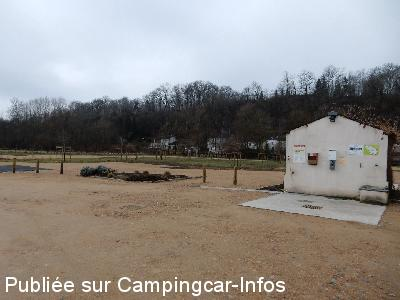
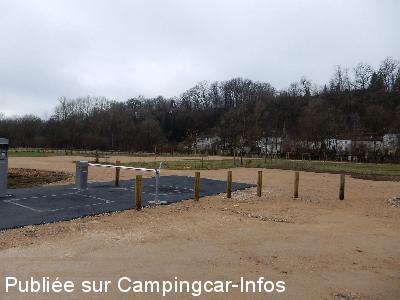
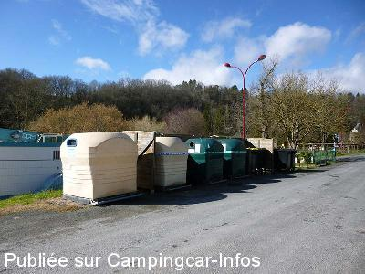
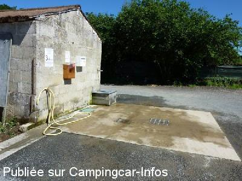

ASN = Aire de services avec stationnement nuit possible de :
BRANTÔME
(N° 273)
Accès/adresse :
Chemin du Vert Galant
24310 BRANTÔME
24310 BRANTÔME
Latitude : (Nord) 45.36046° Décimaux ou 45° 21′ 37′′
Longitude : (Est) 0.64848° Décimaux ou 0° 38′ 54′′
Tarif : 2015
Stationnement : 5,50 €
Taxe de séjour : 0,55 €
Paiement à l'entrée
Services : 2 €
Type de borne : Artisanale
Services :


Poubelles tri sélectif
Laverie automatique à 200 m
Golf miniature
Boulodrome
Aire de jeux enfants
Autres informations :
Ouvert toute l'année
Stationnement limité 48 h
Tél Office du Tourisme : +33(0)553 058 052
http://www.ville-brantome.fr

Le 19/03/2015 par Hudson

Le 19/03/2015 par Hudson

Le 12/06/2014 par Fanfan

Le 23/07/2010 par MICO
de
Céline VIREPINTE
le 24/08/2015 :
Aire calme, très agréable et à 2 pas du village. Certes le plein d'eau est à 2€ mais en fait c'est 2€ les 10min avec un fort débit, largement le temps de faire le plein d'eau, nettoyer les toilettes (autres robinet) et faire le plein des bidons.
Aire calme, très agréable et à 2 pas du village. Certes le plein d'eau est à 2€ mais en fait c'est 2€ les 10min avec un fort débit, largement le temps de faire le plein d'eau, nettoyer les toilettes (autres robinet) et faire le plein des bidons.
de
jipé et viviane
le 28/07/2015 :
nuit agréable certes, village très beau re-certes, mais le plein payant après avoir payé le stationnement, j'ai trouvé que c'était abusé, d'autres communes font beaucoup mieux.
nuit agréable certes, village très beau re-certes, mais le plein payant après avoir payé le stationnement, j'ai trouvé que c'était abusé, d'autres communes font beaucoup mieux.
de
Nicole et Michel
le 11/06/2015 :
AIRE PARFAITE, à 2 pas du village, des promenades,
Règlement affiché pour le déballage, Très bien, les mécontents vont dans un camping, une amende les ferait réfléchir !!!
Nous avons payé 6,05 E pour la nuit le dimanche 31 Mai 2015 et AU CALME !!! Bravo et MERCI
AIRE PARFAITE, à 2 pas du village, des promenades,
Règlement affiché pour le déballage, Très bien, les mécontents vont dans un camping, une amende les ferait réfléchir !!!
Nous avons payé 6,05 E pour la nuit le dimanche 31 Mai 2015 et AU CALME !!! Bravo et MERCI
de
dizgail
le 07/06/2015 :
super, beaucoup de places avec verdure et loin de la route donc pas de bruit.
interdiction de sortir tables, chaises et d'ouvrir la tonnelle, dommage !!!
super, beaucoup de places avec verdure et loin de la route donc pas de bruit.
interdiction de sortir tables, chaises et d'ouvrir la tonnelle, dommage !!!
de
jcf68
le 17/05/2015 :
De passage le 29/04/15.
Aire accueillante, emplacements sur gravier, non délimités, mais les roues arrière du CC sont la terre engazonnée et meuble. Par contre que d'interdits..au sujet du déballage. Sinon idéalement située par rapport à la ville.
De passage le 29/04/15.
Aire accueillante, emplacements sur gravier, non délimités, mais les roues arrière du CC sont la terre engazonnée et meuble. Par contre que d'interdits..au sujet du déballage. Sinon idéalement située par rapport à la ville.
de
Alain LEMOINE
le 19/03/2015 :
§ Salut à tous. L'aire a été complètement repensée et les emplacements stabilisés ( plus de risque de s'embourber ).
La redevance se paye à présent dès l'entrée sur l'aire qui est pourvue d'une barrière d'accès.
Le tarif est passé à 05,50 €.
§ Salut à tous. L'aire a été complètement repensée et les emplacements stabilisés ( plus de risque de s'embourber ).
La redevance se paye à présent dès l'entrée sur l'aire qui est pourvue d'une barrière d'accès.
Le tarif est passé à 05,50 €.
de
Michalu
le 13/03/2015 :
De passage le 6 mars 2015, le stationnement est passé à 5,50 € mais services toujours à 2 €. Sinon c'est très sympathique.
De passage le 6 mars 2015, le stationnement est passé à 5,50 € mais services toujours à 2 €. Sinon c'est très sympathique.
de
hidena86
le 23/04/2014 :
le 22 avril 2014 grande aire tout près de centre ville
idéale pour visiter ce site magnifique ;aire calme au bord de la Dronne ; nombreux commerces et resto
le 22 avril 2014 grande aire tout près de centre ville
idéale pour visiter ce site magnifique ;aire calme au bord de la Dronne ; nombreux commerces et resto